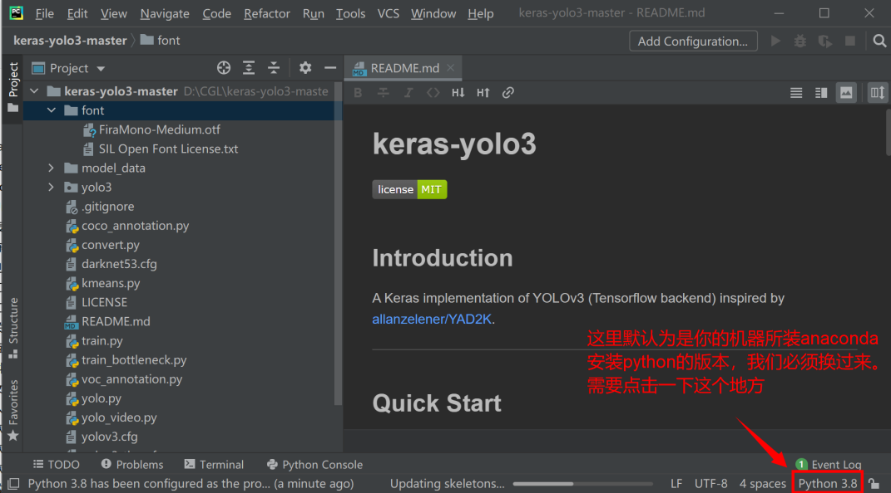
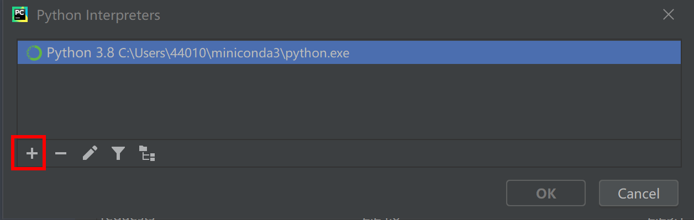
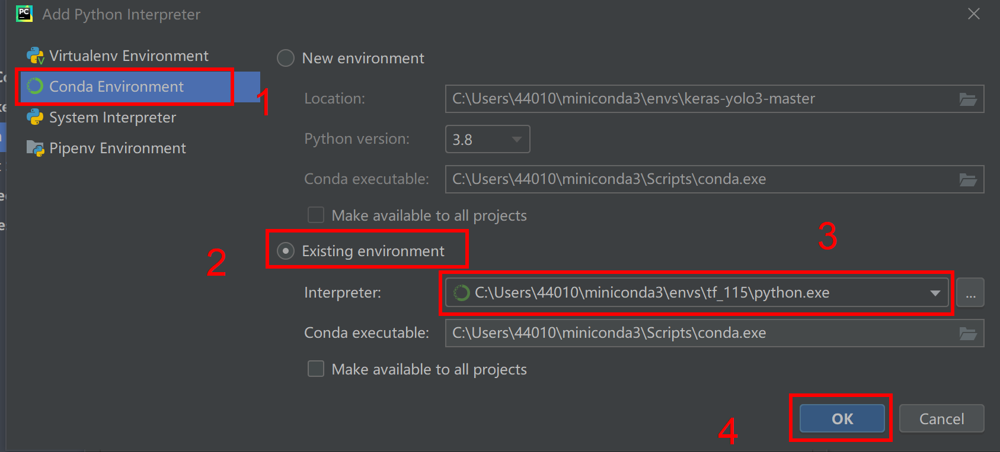
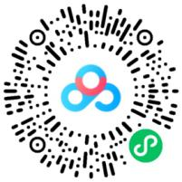
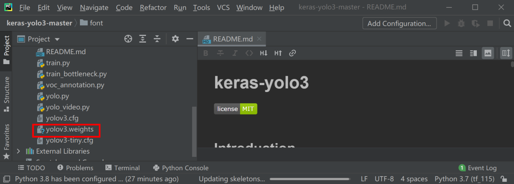
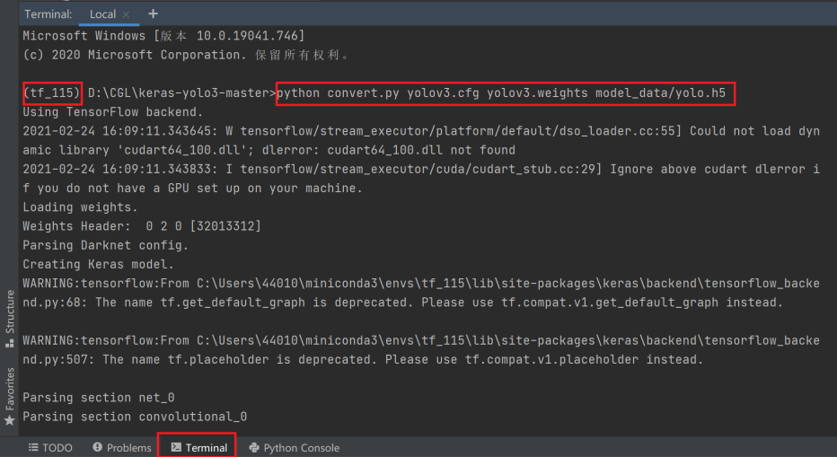

任务四 测试keras-yolov3实例
【任务描述】
YOLO有自己训练好的数据集，YOLO的检测类别和使用的数据集有关系例如：VOC 数据集检测21个类别，COCO 数据集检测80个类别，而且有官方训练比较好的权重，我们可以直接拿来测试，以验证任务3搭建环境是否正确完成。
【任务实施】
步骤1 下载官方keras-yolov3项目文件，并在Pycharm中打开
GitHub下载网址：qqwweee/keras-yolo3.，下载解压之后使用Pycharm打开。（也可以扫描右方二维码进行下载）
- 我们需要在pycharm里面设置之前在anaconda prompt里创建的tf_115虚拟环境，因此，以下操作非常关键：

- 如下图所示，点击右下角“Interpreter Settings”进行设置：

- 在Python Interpreter，点击倒三角按钮，然后再点击Show All...

- 打开另一个窗口，点击+：

- 按下图步骤点击操作，保存更改：

- 这样就能保证改项目是使用我们之前创建的tf_115的虚拟环境。
步骤2 下载官方权重，并测试
下载网址： yolov3.weights.，并将权重放在keras-yolo3-master的文件夹下。（也可以扫描右方二维码进行下载）
 
接着使用 pycharm 终端输入如下命令，把 darknet下的 yolov3 配置文件转换成 keras 适用的 .h5 文件，输入命令：
python convert.py yolov3.cfg yolov3.weights model_data/yolo.h5

步骤3 测试运行yolo.py
进入到 yolo.py 文件中，在文件的最后加上下面这几句代码（需要自定义视频地址或者直接把测试视频放在项目文件夹根目录下），右键运行，看见视频检测，即说明运行成功。
yolo=YOLO()
detect_video(yolo,'test.mp4')

本任务实战代码如下,位于/xm2/rw3-rw5/keras-yolo3-master/yolo.ipynb 同学们来运行一下吧